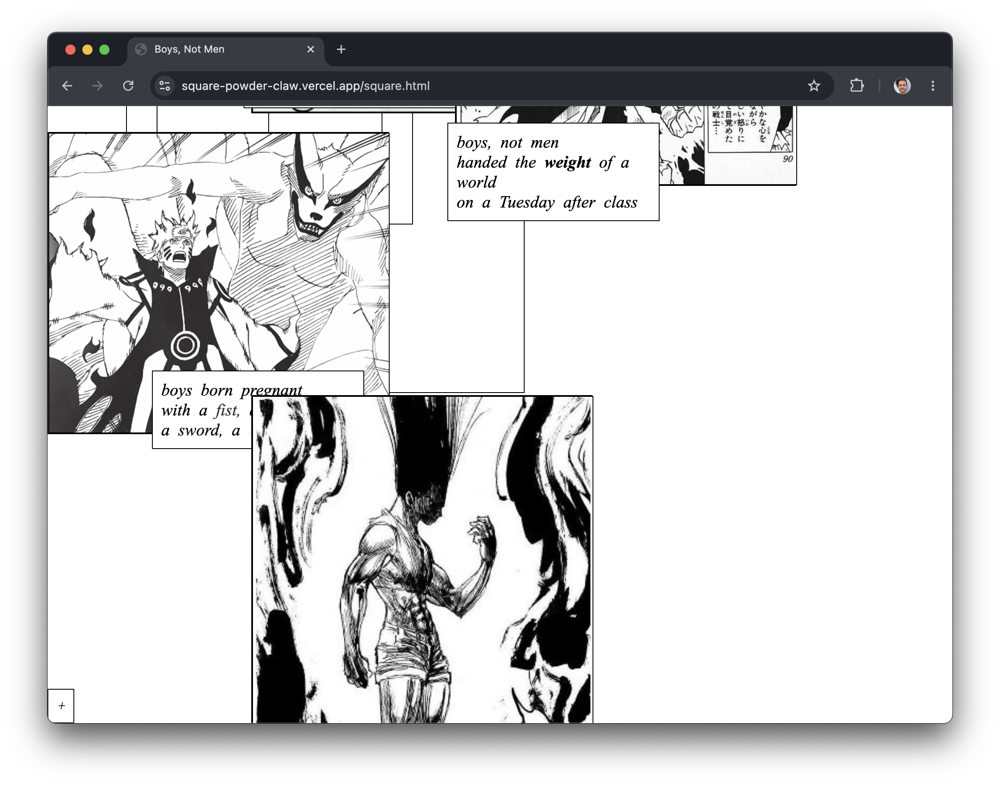

Boys, Not Men

Boys, Not Men is a scrollimation poem. You scroll. Words move. A small dark mark grows. Lines stretch and bold and shuffle and count down. The page is built like a manga panel that has forgotten how to hold its frame: the white space between panels spills out, and the poem lives in that spill.
Boys, not men, handed the weight of a world on a Tuesday after class. The piece is a quiet eulogy for the boy heroes I grew up reading. Naruto Uzumaki, three-time savior of a secret ninja village, son of a father who only appears in flashes between chapters. Goku, humble protector of Earth against six alien invasions, son of a warrior already dead before the saga begins. Gon Freecs, heart of gold, son of a father who left to go traveling and never came back.
The shonen genre runs on a single hidden engine: the father who lives in the white between frames. Fatherhood, not a figure, but a disappearing act. A slower way to conjure absence. Boyhood, not a spurt, but a swelling in the negative space of abandonment. The boys must hurt, must stretch and break, must make space. Stretch marks crevasses. Canvases on the altar of personal evolution. Pain is to the fighter what running is to the runner. A meditation.
The will to power is a transvestite hiding broken softness under its silk dress. A ball of light, an ancient ninja incantation, the soul of a man made sword, the chakras spewing raw power. All these ornate weapons. All pamphlets that start with if only you were here and end with I miss you.
I have read every single one of the 2,295 chapters. Heart cheering for the boy to grow stronger. Hope growing in the negative space of grief. Mine and theirs. Boys, Not Men was selected for the inaugural AltSalt Scrollimation Vol. 1, a journal that treats the scroll itself as a unit of poetic time.
The page does not let you see the whole poem at once. You have to keep scrolling. Like the boy. Forward. Through.